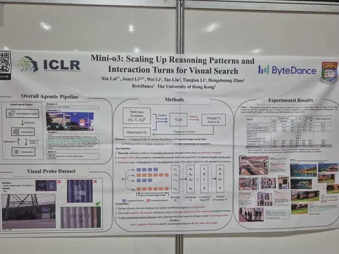
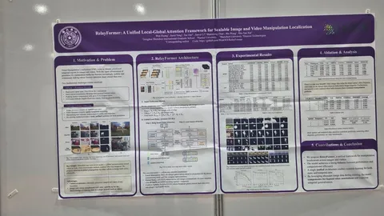

У нас ещё остались обзоры интересных постеров. Сегодня расскажем о двух моделях: одна — на тему агентного визуального поиска, другая — о поиске изменённых областей в изображениях и видео.
Mini-o3: Scaling Up Reasoning Patterns and Interaction Turns for Visual Search
Модель для сложного визуального поиска, которая действует как агент: делает много шагов, приближает нужные области, проверяет гипотезы, ошибается, возвращается и продолжает поиск.
Авторы создали датасет Visual Probe с тысячами сложных задач, собрали обучающие траектории с разными паттернами рассуждений — depth-first search, trial-and-error, удержание цели — и вводят over-turn masking, чтобы во время RL не штрафовать модель за слишком длинные незавершённые попытки. В результате Mini-o3, даже обучаясь максимум на шести шагах, на инференсе умеет масштабироваться до десятков шагов, и точность растёт с увеличением числа шагов.
RelayFormer: A Unified Local-Global Attention Framework for Scalable Image and Video Manipulation Localization
RelayFormer — модель для поиска изменённых областей в изображениях и видео. Идея в том, чтобы не сжимать картинку целиком и не терять мелкие forensic-артефакты, а разрезать её на небольшие перекрывающиеся фрагменты (overlapping sub-images) и обрабатывать их в исходном качестве. Каждый кусок обрабатывается отдельно, но между ними есть специальные GLR-токены — своего рода relay-посредники, которые собирают локальные признаки, обмениваются глобальным контекстом и возвращают его обратно. После этого mask decoder строит маску изменённых пикселей.
Интересное заметила
#YaICLR26
CV Time

